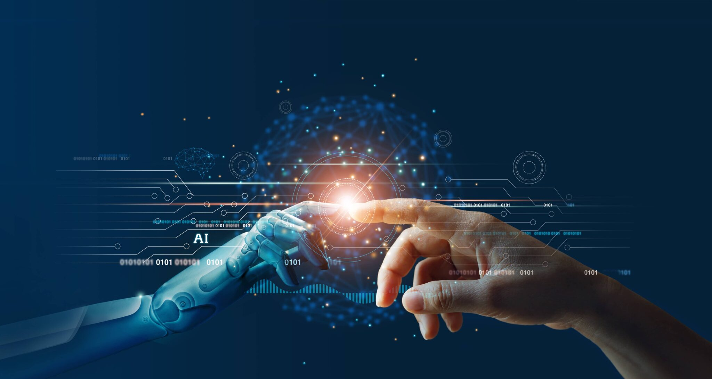

|
Al Doilea Război Mondial Testul Turing și cele trei legi ale roboticii Diferența între inteligență și mimarea ei Primii roboți inteligenți – nașterea reală a inteligenței artificiale Workshop-ul de la Colegiul Dartmouth |
Al Doilea Război Mondial Totul a început odată cu Al Doilea Război Mondial, evenimentul care a dus la dezvoltarea fără precedent a neuroștiințelor și computerelor. Alan Turing a fost cel mai important om pe care l-a avut Marea Britanie, și chiar lumea, în lupta cu Germania nazistă. Alături de o echipă de matematicieni și criptografi, Turing a încercat și a reușit să spargă codul Enigma folosit de germani, creând un computer special pentru acest scop.Enigma a fost coșmarul Aliaților în Al Doilea Război Mondial, iar Turing s-a gândit că doar o mașină poate bate o mașină și un cod socotit drept imposibil de spart. Enigma funcționa după un principiu simplu, în aparență: era dotată cu o tastatură prin care se introduce textul, literă cu literă, dar iese un alt mesaj și doar cine are cheia potrivită îl poate citi. Cheia se schimba în fiecare zi, de aceea Aliații au avut mult de muncă până să spargă codul. Mașina Enigma controla fiecare simbol prin rotoare, iar germanii au ales să schimbe codul zilnic, pentru ca inamicii să nu aibă timp să găsească cheia potrivită. Mașina creată de Turing pentru a descifra codurile Enigma a avut două nume: „Bombe“ și „Victory“. Turing a eficientizat, practic, o creație a unei echipe poloneze care a reușit să spargă codul Enigma în anii ’30. În 1936, omul de știință a publicat un articol în care a descris „mașina universală Turing”. El a fost astfel primul om de știință care dorea să creeze programe pentru o mașină care să îi permită să îndeplinească mai multe sarcini în același timp, precum computerele zilelor noastre. |